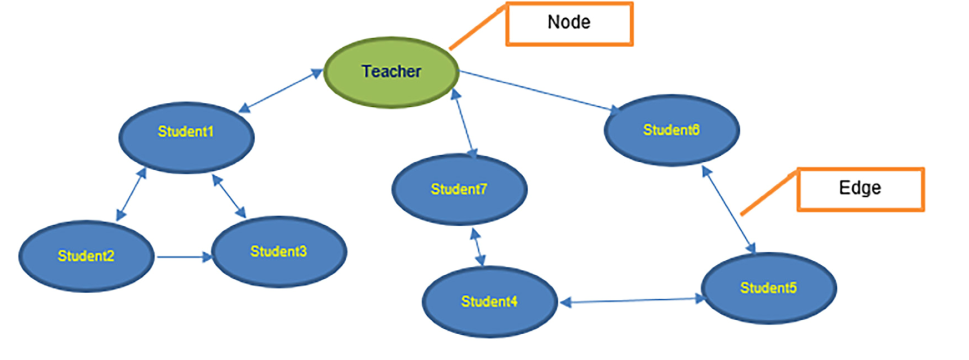
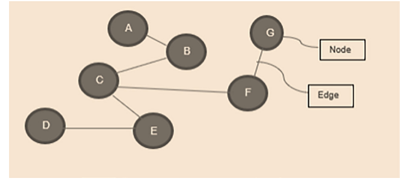
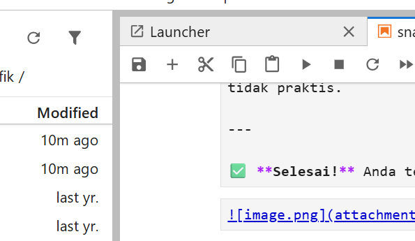

Dengan berkembangnya Web 2.0, berbagi data di situs jejaring sosial telah meningkat. Hal ini bukan hanya tentang data; berbagai informasi dan layanan juga telah beralih ke dunia online. Orang-orang mengekspresikan pandangan mereka di internet melalui situs jejaring sosial, blog, dan berbagai forum. Dalam suatu cara, kita dapat melihat bahwa orang-orang saling terhubung atau berelasi satu sama lain. Hubungan-hubungan ini bisa berupa hubungan satu arah (bukan hubungan timbal balik) atau hubungan dua arah (di mana kedua pengguna terlibat dalam hubungan). Sebagai contoh, Facebook mengikuti model simetris, artinya, baik ‘A’ maupun ‘B’ adalah teman, sedangkan Twitter mengikuti konsep jaringan asimetris (akan kita bahas di bagian berikutnya), yaitu, jika ‘A’ mengikuti ‘B’, itu tidak berarti ‘B’ juga mengikuti ‘A’. Belajar tentang hubungan semacam itu dan menganalisisnya dari perspektif yang lebih luas dapat membantu menjawab banyak pertanyaan, seperti siapa orang-orang paling berpengaruh dalam jaringan? Atau kelompok orang mana yang lebih saling terhubung (mungkin dari kelompok tertentu)? Apa jenis hubungan antara berbagai pengguna dalam suatu kelompok? Sebagai contoh, di sebuah departemen, hal umum yang terlihat adalah adanya kelompok-kelompok kecil yang sering pergi makan siang bersama. Ini menunjukkan bahwa mereka lebih saling terhubung; demikian pula, ada orang-orang yang menjadi bagian dari hampir semua kelompok, dan orang-orang seperti itu diidentifikasi sebagai orang-orang paling berpengaruh dalam jaringan. Mengetahui kelompok atau orang-orang semacam itu dapat membantu terhubung melintasi jaringan dalam waktu minimum untuk tujuan apa pun. Semua pertanyaan ini ditemukan jawabannya dalam analisis jaringan sosial. Meskipun analisis jaringan sosial, merupakan topik besar yang perlu dipelajari, bab ini secara singkat memperkenalkan pembaca pada konsep jaringan, jaringan sosial, berbagai jenis jaringan, cara menganalisis suatu jaringan, dan akhirnya, sebuah studi kasus dari Facebook serta penyajian data tersebut dalam bentuk pengetahuan yang bermakna.
4 Struktur
Topik-topik yang akan dibahas dalam buku ini adalah sebagai berikut:
Pengantar analisis jaringan sosial
Membuat jaringan
Jaringan simetris
Jaringan asimetris
Keterhubungan jaringan
Pengaruh dalam jaringan
Studi kasus pada dataset Facebook
5 Tujuan
Tujuan bab ini adalah memperkenalkan pembaca pada bidang yang sangat penting, yaitu analisis jaringan sosial. Bab ini akan dimulai dengan pengantar mengenai Analisis Jaringan Sosial (SNA), pembuatan jaringan menggunakan Python, serta berbagai atribut terkait SNA yang membantu memahami perilaku jaringan. Kita akan belajar dan mendemonstrasikan cara menemukan keterhubungan jaringan serta peran pengaruh dalam jaringan menggunakan program Python. Di akhir, kita akan membahas studi kasus pada dataset Facebook untuk menerapkan dan memahami pembelajaran dari bab ini.
6 Pengantar Analisis Jaringan Sosial
Secara historis, konsep “Jaringan Sosial” telah dipelajari sejak akhir abad ke-19 dan awal abad ke-20 untuk mengeksplorasi hubungan antar anggota sistem sosial. Dalam tinjauan sejarah, para akademisi mulai tertarik pada jaringan media sosial di akhir abad ke-19 ketika para sarjana Georg Simmel, Emile Durkheim, dan Max Weber mempelajari perspektif struktural dalam studi perilaku manusia. Namun, dasar studi analisis jaringan sosial modern diletakkan oleh psikiater Jacob Moreno. Ia mempelajari bagaimana kesejahteraan psikologis individu dikaitkan dengan hubungannya dengan individu lain. Kemudian setelah banyak pasang surut, melalui pekerjaan yang dilakukan oleh para sarjana dari banyak universitas seperti Harvard dan University of California di Irvin (UCI), yang berupaya keras untuk mempopulerkan dan mempromosikan analisis jaringan sosial sebagai bidang multidisiplin. Analisis jaringan sosial digunakan di banyak bidang, seperti psikologi, sosiologi, ekonomi, ilmu politik, ilmu pengetahuan, dan ilmu komputer.
Dalam beberapa tahun terakhir, analisis jaringan sosial telah menemukan banyak aplikasi, seperti menemukan hubungan antar karyawan dalam suatu organisasi, menemukan orang yang paling berpengaruh dalam suatu jaringan, pelacakan kontak dalam penyebaran penyakit, dan banyak lainnya. Kita dapat memahami Analisis Jaringan Sosial (SNA) sebagai analisis metodologis terhadap jaringan sosial.
Sebuah jaringan sosial dapat dipahami sebagai jaringan hubungan antar manusia dan divisualisasikan sebagai graf, di mana simpul (node) adalah orang, dan hubungan direpresentasikan sebagai sisi (edge).
Secara umum, jaringan dianggap sebagai himpunan objek (simpul/nodes) dengan interkoneksi (sisi/edges).
Kita memiliki berbagai jenis jaringan sebagai berikut:
Jaringan sosial
Jaringan transportasi dan mobilitas
Jaringan informasi
Jaringan biologis
Jaringan keuangan, jaringan kerjasama penulis (co-authorship networks), dan sebagainya
Namun, dalam bab ini, kita akan fokus pada analisis jaringan sosial. Dalam jaringan sosial, penekanannya ada pada struktur sosial antar aktor, terutama individu, kelompok, atau organisasi. Ini merepresentasikan cara mereka saling berhubungan, dan hubungan tersebut bisa berupa pertemanan, kekerabatan, rekan kerja, dan sebagainya. Jadi, kita dapat mengatakan bahwa dalam analisis jaringan sosial, kita melakukan analisis terhadap jaringan, di mana simpul jaringan adalah orang atau aktor, dan sisi-sisinya adalah hubungan antar orang. Dalam SNA, yang penting adalah hubungan, bukan orangnya.
Sebelum melanjutkan, kita harus memahami apa kebutuhan melakukan analisis ini. Tujuan dari analisis jaringan sosial adalah memahami suatu komunitas dengan memetakan hubungan-hubungan yang menghubungkan mereka sebagai suatu jaringan. Analisis ini juga dapat memberikan wawasan tentang pengaruh sosial dalam tim dan mengidentifikasi masalah-masalah. Berikut adalah beberapa contoh tempat di mana analisis jaringan sosial dapat diterapkan:
Bisnis menggunakan SNA untuk menganalisis dan meningkatkan komunikasi dalam organisasi atau dengan mitra maupun pelanggan.
SNA juga dapat digunakan untuk mengidentifikasi jaringan kriminal dan teroris dari jejak komunikasi, atau mungkin mengidentifikasi pemain kunci dalam jaringan tersebut.
Situs jejaring sosial (seperti Facebook) dapat menggunakannya untuk merekomendasikan teman potensial berdasarkan teman dari teman.
Untuk menilai kinerja seorang siswa berdasarkan jaringan sosialnya, yaitu teman sekelasnya.
Untuk menganalisis siapa orang paling berpengaruh dalam jaringan (organisasi).
Dengan mempelajari struktur jaringan suatu partai politik, kita dapat memprediksi apakah partai tersebut akan terpecah menjadi dua kelompok, serta memprediksi anggota mana yang akan bergabung ke partai mana, atau siapa pemimpin paling populer dalam partai tersebut.
Pelacakan pergerakan.
Analisis sentimen.
Untuk memahami lebih lanjut, kita dapat mengambil contoh hubungan antar siswa dalam sebuah kelas. Dalam satu kelas, dua siswa mana pun dapat saling terhubung atau tidak; hubungan antara dua siswa tersebut bisa berupa hubungan satu arah, atau bisa juga berupa hubungan dua arah (sebagaimana ditunjukkan pada Gambar 8.1). Di sini, arah panah merepresentasikan arah hubungan.

Gambar 8.1: Hubungan antara satu guru dan tujuh siswa
Dalam ilmu komputer, hubungan semacam itu dapat direpresentasikan dalam bentuk Graf, yang juga dikenal sebagai Jaringan.
Sebuah jaringan (atau Graf) adalah representasi dari koneksi antar sejumlah item. Dalam jaringan semacam itu, item-item direpresentasikan sebagai simpul (atau titik sudut), dan koneksi disebut sisi, seperti yang ditunjukkan pada Gambar 8.2:

Dua atribut penting untuk memahami jaringan sosial adalah derajat dan kerapatan.
Derajat: Derajat merujuk pada jumlah koneksi yang dimiliki suatu simpul dalam jaringan. Individu-individu dengan banyak koneksi dapat menggerakkan sejumlah besar sumber daya dan memainkan peran sentral dalam aliran informasi.
Kerapatan: Kerapatan merujuk pada rasio antara jumlah koneksi aktual terhadap semua kemungkinan koneksi.
Untuk menunjukkan berbagai konsep terkait analisis jaringan sosial, program Python yang diberikan dalam bab ini dijalankan menggunakan Jupyter Notebook pada distribusi Anaconda. Kode juga dapat dijalankan menggunakan Google Colab.
6.0.1 Membuat sebuah jaringan
Sebuah jaringan dalam Python dibuat menggunakan pustaka networkx. Untuk membuat jaringan menggunakan Python, kita perlu mengimpor networks, lalu kelas Graph digunakan untuk membuat objek bertipe graf, dan metode add_edge() digunakan untuk menambahkan sisi ke graf tersebut.
Code
import networkx as nxG=nx.Graph() ## Create a Graph object and assign it to G ##Further reference to graph will be through this variableG.add_edge('A','B') ## Add edge (‘A’,’B’) to graph GG.add_edge('B','C') ## Add edge (‘B’,’C’) to graph Gprint(G.nodes()) ## Print all nodes of graph Gprint(G.edges()) ## Print all edges of graph G
['A', 'B', 'C']
[('A', 'B'), ('B', 'C')]
6.1 Deteksi Komunitas
Algoritma: Algoritma Girvan-Newman mengikuti langkah-langkah berikut:
Buat Graf: Mulailah dengan jaringan yang diberikan, yang terdiri dari simpul dan sisi.
Hitung Betweenness: Hitung edge betweenness centrality untuk semua sisi dalam graf.
Hapus Sisi dengan Betweenness Tertinggi: Identifikasi dan hapus sisi (atau sisi-sisi) yang memiliki skor betweenness tertinggi.
Hitung Ulang Betweenness: Setelah menghapus sisi, hitung ulang nilai betweenness untuk sisi-sisi yang terpengaruh.
Ulangi Langkah 3 dan 4: Lanjutkan menghapus sisi hingga tidak ada sisi yang tersisa atau struktur komunitas yang bermakna muncul.
Ekstraksi Komunitas: Seiring dihapusnya sisi-sisi, graf secara bertahap terpecah menjadi komponen-komponen terhubung yang terpisah, yang mewakili komunitas yang berbeda.
6.2Hitung sentralitas antara untuk sisi-sisi.
Tentu, berikut terjemahan yang telah diperbaiki dengan format rumus matematika yang lebih jelas dan rapi:
Hitung sentralitas antara untuk sisi-sisi.
Sentralitas antara dari sebuah sisi e adalah jumlah dari fraksi semua pasangan jalur terpendek yang melewati e:
di mana: - \(V\) adalah himpunan simpul, - \(\sigma(s,t)\) adalah jumlah jalur terpendek dari simpul s ke simpul t, - \(\sigma(s,t|e)\) adalah jumlah jalur terpendek dari s ke t yang melewati sisi e .
Code
pip install python-louvain
Collecting python-louvain
Using cached python_louvain-0.16-py3-none-any.whl
Requirement already satisfied: networkx in c:\users\user\appdata\local\programs\python\python313\lib\site-packages (from python-louvain) (3.5)
Requirement already satisfied: numpy in c:\users\user\appdata\local\programs\python\python313\lib\site-packages (from python-louvain) (2.3.1)
Installing collected packages: python-louvain
Successfully installed python-louvain-0.16
Note: you may need to restart the kernel to use updated packages.
Code
import networkx as nximport community as community_louvain # pip install python-louvainimport matplotlib.pyplot as plt# Buat graf (ganti dengan data Anda: CSV, GML, dll.)G = nx.Graph()G.add_edges_from([('A','B'), ('A','C'), ('B','C'), ('C','D'), ('D','E')])# Jalankan Louvainpartition = community_louvain.best_partition(G)print("Partisi:", partition)# Output: {'A': 0, 'B': 0, 'C': 0, 'D': 1, 'E': 1}# Hitung modularitymod = community_louvain.modularity(partition, G)print(f"Modularity: {mod:.3f}") # → ~0.220# Visualisasipos = nx.spring_layout(G, seed=42)colors = [partition[node] for node in G.nodes()]nx.draw(G, pos, with_labels=True, node_color=colors, cmap=plt.cm.Set3, node_size=800)plt.show()
Collecting python-igraph
Using cached python_igraph-1.0.0-py3-none-any.whl.metadata (3.1 kB)
Collecting leidenalg
Using cached leidenalg-0.11.0-cp38-abi3-win_amd64.whl.metadata (10 kB)
Collecting igraph==1.0.0 (from python-igraph)
Using cached igraph-1.0.0-cp39-abi3-win_amd64.whl.metadata (4.5 kB)
Collecting texttable>=1.6.2 (from igraph==1.0.0->python-igraph)
Using cached texttable-1.7.0-py2.py3-none-any.whl.metadata (9.8 kB)
Using cached python_igraph-1.0.0-py3-none-any.whl (9.2 kB)
Using cached igraph-1.0.0-cp39-abi3-win_amd64.whl (3.2 MB)
Using cached leidenalg-0.11.0-cp38-abi3-win_amd64.whl (2.0 MB)
Using cached texttable-1.7.0-py2.py3-none-any.whl (10 kB)
Installing collected packages: texttable, igraph, python-igraph, leidenalg
Successfully installed igraph-1.0.0 leidenalg-0.11.0 python-igraph-1.0.0 texttable-1.7.0
Note: you may need to restart the kernel to use updated packages.
Code
import igraph as igimport leidenalg as la# Buat graf igraphg = ig.Graph.TupleList([('A','B'), ('A','C'), ('B','C'), ('C','D'), ('D','E')], directed=False)# Deteksi komunitas dengan Leiden (default)partition = la.find_partition(g, la.ModularityVertexPartition)print(partition.membership) # [0, 0, 0, 1, 1]print("Modularity:", partition.modularity)
[0, 0, 0, 1, 1]
Modularity: 0.21999999999999992
Code
import networkx as nxfrom collections import Counterdef girvan_newman_manual(G, verbose=True):""" Implementasi manual Girvan-Newman algorithm. Mengembalikan daftar partisi komunitas setelah setiap iterasi. """# Salin graf agar tidak mengubah aslinya G = G.copy() partitions = [] step =0 partitions.append(list(nx.connected_components(G)))if verbose:print(f"Step {step}: Komunitas awal = {partitions[-1]}")while G.number_of_edges() >0:# Hitung edge betweenness centrality (default: normalized=False sesuai perhitungan manual) eb = nx.edge_betweenness_centrality(G, normalized=False)# Urutkan edge berdasarkan betweenness (desc), lalu alfabetik untuk tie-breaking sorted_edges =sorted(eb.items(), key=lambda x: (-x[1], x[0])) max_betweenness = sorted_edges[0][1]# Ambil semua edge dengan betweenness maksimum (biasanya 1, tapi bisa >1 jika tie) candidates = [edge for edge, bc in sorted_edges if bc == max_betweenness] edge_to_remove = candidates[0] # Pilih pertama (misal: urutan alfanumerik)# Hapus edge G.remove_edge(*edge_to_remove) step +=1# Ambil komunitas (connected components) current_comms =list(nx.connected_components(G)) partitions.append(current_comms)if verbose:print(f"Step {step}: Hapus edge {edge_to_remove} (betweenness={max_betweenness:.1f})")print(f" → Komunitas: {current_comms}")# Optional: berhenti setelah komunitas stabil atau cukup (opsional)# Misal: jika sudah 2 komunitas utama dan jelas terpisah# if len(current_comms) >= 2 and step == 1: # contoh: berhenti setelah pemisahan pertama# breakreturn partitions# === MAIN PROGRAM ===if__name__=="__main__":# Buat graf sesuai gambar G = nx.Graph() G.add_edges_from([ ('A', 'B'), ('A', 'C'), ('B', 'C'), ('C', 'D'), ('D', 'E') ])print("Graf Awal:")print("Node:", sorted(G.nodes()))print("Edge:", sorted(G.edges()))print()print("Menjalankan Girvan-Newman Manual:") partitions = girvan_newman_manual(G, verbose=True)print("\nRingkasan Hasil:")for i, comms inenumerate(partitions):print(f"Step {i}: {comms}")print("\nKomunitas Optimal (setelah pemisahan pertama):", partitions[1])
Louvain adalah algoritma community detection berbasis optimasi modularity (\(Q\)) secara greedy dan multi-level.
Tujuannya: mempartisi jaringan menjadi kelompok (komunitas) sehingga node dalam satu kelompok saling terhubung erat, dan hubungan antar kelompok minimum.
🔹 Dikembangkan oleh: Blondel et al. (2008)
🔹 Keunggulan: cepat, scalable, hasil stabil
🔹 Kompleksitas empiris: \(\sim O(n\log n)\)
6.4 Modularity (\(Q\))
Modularity mengukur kualitas partisi komunitas relatif terhadap null model (jaringan acak dengan derajat tetap):
Catatan:
- Jika \(A_{ij} > \frac{k_i k_j}{2m}\) → edge lebih kuat dari kebetulan → cocok satu komunitas.
- \(Q \in [-0.5,1]\); semakin tinggi (mendekati 1), semakin baik.
6.5 Dua Fase Utama Louvain
6.5.1Fase 1: Local Moving
Inisialisasi: tiap node = komunitas sendiri.
Untuk setiap node \(i\), hitung gain modularity jika dipindahkan ke komunitas tetangga \(C'\): \[\Delta Q = \frac{1}{2m} \left[ \sum_{j \in C'} A_{ij} - \sum_{j \in C} A_{ij} \right] - \frac{k_i}{(2m)^2} \left[ k_{C'} - k_C + k_i \right]\]
Pindahkan \(i\) ke komunitas dengan \(\Delta Q_{\max} > 0\).
Ulangi hingga tidak ada peningkatan \(Q\).
Untuk perhitungan manual, lebih aman hitung \(Q_{\text{baru}} - Q_{\text{lama}}\) secara langsung.
6.5.2Fase 2: Aggregation
Bentuk supernode: tiap komunitas jadi satu node.
- Bobot edge antar supernode \(S_p, S_q\): \[w_{pq} = \sum_{i\in S_p,\, j\in S_q} A_{ij}\]
- Bobot loop internal \(S_p\): \[w_{pp} = \sum_{i,j \in S_p,\, i \ne j} A_{ij}\]
Ulangi Fase 1 pada graf agregat. Berhenti ketika \(Q\) tidak naik.
Kita coba pindahkan C (node paling terhubung) ke komunitas tetangga.
6.6.1.1 Opsi 1: Gabung C ke komunitas A (C₃ → C₁)
Baru: C₁={A,C}, lainnya tetap
Hitung kontribusi modularity dari pasangan dalam C₁:
- Edge dalam: AC → 1
- \(k_A=2\), \(k_C=3\)
- Kontribusi: \(A_{AC}-\frac{k_Ak_C}{2m}=1-\frac{2\cdot3}{10}=1-0.6=0.4\)
Total Q hanya dari C₁ (sisanya nol): \[Q=\frac{1}{10}\cdot0.4=0.04\]
6.6.1.2 Opsi 2: Gabung C ke komunitas B → sama, Q=0.04
6.6.1.3 Opsi 3: Gabung C ke komunitas A dan B sekaligus → C₁={A,B,C}
Dalam C₁: edge = AB, AC, BC → 3 edge
Sum \(A_{ij}=3\)
Sum \(k_ik_j\):
- AB: \(2\times2=4\)
- AC: \(2\times3=6\)
- BC: \(2\times3=6\)
→ Total = 16
Kontribusi: \(3-\frac{16}{10}=1.4\) \[Q=\frac{1.4}{10}=0.14\]
6.6.1.4 Sekarang tambahkan D dan E ke komunitas masing-masing, lalu coba gabung D–E:
Untuk menghitung Edge Betweenness Centrality secara manual, kita perlu menghitung seberapa sering setiap edge (sisi) muncul dalam semua jalur terpendek (shortest paths) antara pasangan node di graf.
7.2.1 Langkah-langkah:
Identifikasi semua pasangan node yang berbeda → ada 5 node: A, B, C, D, E → jumlah pasangan = C(5,2) = 10 pasangan.
Untuk setiap pasangan, cari semua shortest paths.
Untuk setiap edge, hitung berapa banyak shortest paths yang melewati edge tersebut.
Jumlahkan untuk setiap edge → itulah Edge Betweenness Centrality-nya.
7.2.2 Graf:
Node: A, B, C, D, E
Edge:
- A-B
- A-C
- B-C
- C-D
- D-E
Graf ini adalah tree + satu siklus kecil (triangle ABC).
Catatan: Karena tidak ada multiple shortest paths (semua pasangan hanya punya 1 shortest path), maka tidak perlu membagi dengan jumlah path — cukup hitung kemunculan edge di setiap shortest path.
Ini adalah hasil akhir perhitungan manual Edge Betweenness Centrality untuk graf tersebut. ## Tujuan Girvan-Newman: Mendeteksi komunitas (community detection) dengan cara: 1. Hitung edge betweenness centrality untuk semua edge. 2. Hapus edge dengan betweenness tertinggi. 3. Ulangi langkah 1 dan 2 sampai graf terpecah menjadi komponen terhubung (connected components). 4. Setiap komponen terhubung dianggap sebagai satu komunitas.
7.7 Langkah-langkah Manual
7.7.1 Graf Awal:
Node: A, B, C, D, E
Edge: A-B, A-C, B-C, C-D, D-E
→ Graf ini adalah tree + triangle ABC
Kita sudah hitung edge betweenness centrality sebelumnya:
Edge
Betweenness
A-B
1
A-C
3
B-C
3
C-D
6 ← tertinggi
D-E
4
7.8 🔪 Iterasi 1: Hapus edge dengan betweenness tertinggi → C-D
Setelah menghapus C-D, graf terpecah menjadi dua komponen:
Komponen 1: {A, B, C}
Komponen 2: {D, E}
✅ Ini sudah bisa dianggap sebagai dua komunitas:
→ Komunitas 1: A, B, C
→ Komunitas 2: D, E
Namun, karena Girvan-Newman biasanya dilanjutkan hingga tidak ada edge tersisa atau semua node terpisah, kita lanjutkan untuk melihat struktur lebih dalam.
7.9 🔁 Iterasi 2: Hitung ulang edge betweenness untuk setiap komponen
Karena graf sudah terpecah, kita hitung edge betweenness di masing-masing komponen secara terpisah.
7.19.2 Komunitas Terbaik (biasanya diambil saat modularity maksimum):
Karena graf kecil, kita bisa lihat bahwa:
Setelah penghapusan pertama (C-D), kita punya dua komunitas:
→ {A,B,C} dan {D,E}
Ini adalah partisi paling bermakna karena: - {A,B,C} membentuk triangle (komunitas sangat terhubung) - {D,E} adalah pasangan terhubung - Edge C-D adalah “bridge” antara dua kelompok
Jadi, komunitas optimal menurut Girvan-Newman adalah:
🟢 Komunitas 1: {A, B, C}
🟢 Komunitas 2: {D, E}
7.20 Catatan Tambahan
Jika Anda ingin hitung modularity Q untuk validasi, saya bisa bantu juga.
Algoritma ini cocok untuk graf kecil seperti ini, tapi untuk graf besar, perhitungan manual tidak praktis.
✅ Selesai! Anda telah menyelesaikan Girvan-Newman secara manual untuk graf ini.

foto.png
```opbweyibr belajar.md
Code
!jupyter labextension list
8 Uji MyST
8.1 1. Uji Matematika
Inline math: \(x^2+y^2=z^2\)
Display math: \[E=mc^2\]
8.2 2. Uji Directive
Ini adalah catatan jika MyST aktif.
Indikator Berhasil: - Jika persamaan \(x^2+y^2=z^2\) dan \[E=mc^2\] ter-render sebagai simbol matematika yang rapi (bukan teks biasa), maka parser matematika MyST aktif. - Jika blok {note} muncul sebagai kotak catatan berwarna (bukan teks kode biasa), maka parser direktif MyST aktif.
8.2.1 4. Cek Pengaturan Advanced Settings
Kadang ekstensi terinstal tetapi tidak dikonfigurasi sebagai default untuk file .md.
Masuk ke Settings > Advanced Settings Manager.
Cari File Editor atau Notebook.
Periksa bagian markdownParser atau konfigurasi terkait ekstensi untuk memastikan MyST diaktifkan.
Jika semua langkah di atas menunjukkan hasil positif, maka jupyterlab-myst sudah siap digunakan.
8.3 Belajar
Cara konversi ke docx https://cloudconvert.com/pricing